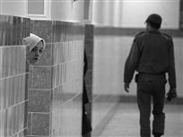

پذيرش > سایت نوشته ها > جرم: زاده شدن از مادری مجرم، حکم: زندان
 زنان و زندان زنان و زندان

 جرم: زاده شدن از مادری مجرم، حکم: زندان جرم: زاده شدن از مادری مجرم، حکم: زندان
12 تیر 1387 - رادیو فردا / شیرین فامیلی - نسخه قابل چاپ
علی اکبر یساقی، رييس سازمان زندان ها و اقدامات تأمينی گفته است، در حال حاضر کمتر از صد نفر از کودکان زير دو سال در کنار مادران خود در زندان ها نگهداری می شوند.
اين کودکان شامل نوزاد های شيرخوار تا اطفال شش ساله می شوند. در آيين نامه اجرايی سازمان زندان ها تنها در يک مورد، آن هم در تبصره يک ماده شصت و نه تصريح شده که زنان زندانی، می توانند کودکان خود را تا دو سال به همراه داشته باشند.
شيرين عبادی ، حقوقدان و از مدافعان حقوق کودک در مصاحبه ای با راديو فردا اين آيين نامه را ناکافی می داند.
وی می گويد: «متاسفانه، حقوق لازم لحاظ نشده. فقط ذکر شده که زندان ها بايد طبقه بندی شوند. سابقا هم يک مهد کودک در زندان بود که متاسفانه اين مهد کودک زندان تعطيل شد و الان به موجب قانون، بچه هايی که همراه مادر بايستی در زندان باشند، لغت بايد را از اين جهت به کار می برم که گاهی اوقات هيچ کس نيست که بچه را نگهداری کند. پدر بچه حاضر نيست و يا در دسترس نيست و مادر بچه می خواهد فرزندش را خصوصا اگر شير خوار باشد با خودش ببرد که متاسفانه تعداد اينها در زندانه ای ما کم هم نيستند.»
مهد کودک در زندان يکی از نيازهای اوليه کودکان خردسالی است، که به گفته حقوقدانان، به همراه مادران خود زندانی هستند.
راحله عسگری زاده ، فعال جنبش زنان، که اخيرا مدتی در بند مالی زندان اوين در بازداشت به سر برده از وضعيت نامناسب کودکان در زندان می گويد.
وی اظهار داشت: «در بند مالی که شايد هفتاد هشتاد نفر آدم بودند دو تا بچه وجود داشتند و در بندهای ديگر هم من بچه هايی را می ديدم که حتی مادر در خود زندان زايمان کرده بود يعنی بچه ها نوزاد بودند. در برخی موارد هم، مادر را دستگير کرده بودند و مادر بچه اش را را با خود به زندان اورده بود.(اینها) در همان بند و همان اتاقی بودند که بقيه بودند و اتاق خاصی هم مادر نداشت و هيچ امکانات ويژه ای را مادر دريافت نمی کرد.»
خانم عسکری زاده افزود: «اين بچه ها دراصل ، مثل زندانی های ديگر بودند. يک تعدادی می توانستند بچه هايشان را ببرند در بخش فرهنگی زندان. بخش فرهنگی زندان کتابخانه داشت، جای ورزش داشت و يک تعدادی هم عروسک داشت. اما اين کفاف بچه های زندان را نمی داد. بعد هم کسانی که می خواستند به بخش فرهنگی بروند بايستی اسمشان را به بند اعلام می کردند بعد می رفتند به بخش فرهنگی و اگر می رفتند بخش فرهنگی، زمان تلفن زدن و خريد کردنشان را از دست می دادند.. برای همين نمی رفتند. گاهی وقت ها اين بچه ها مي خواستند. ولی مادرشان بايد تلفن مي زد و يا خريد می کرد و يا کاری داشت وهيچ کسی نبود که مراقبت کند و زندانی های ديگر مراقب اين بچه ها بودند.»
افزون بر نبود مهد کودک در زندان، برای مادرانی که فرزند شير خوار دارند نيز تغذيه مناسب و يا آن گونه که راحله عسگری زاده می گويد، حتی جای خواب جداگانه برای کودک در نظر گرفته نشده است.
به گفته این فعال حقوق زنان، «جان اين کودکان خردسال در مواردی در خطر است.»
راحله عسکری زاده می گويد: «اگر در اتاقی يک تخت اضافی بود، هم اتاقی ها تصميم می گرفتند بچه را روی تخت اضافه بخوابانند. اگر نبود کنار مادرشان می خوابيدند. البته چون قاعدتا اين بچه ها کوچکند ، مادران ترجيح می دادند که در کنارشان باشند. بعد تخت های زندان، مثل تخت های پادگان سه طبقه است و هميشه اين مادرها طبقه اول نيستند، مثلا مادر در زندان تازه وارد است و تازه واردها هم امکانات خاص بقيه زندانی ها را ندارند و مجبور می شوند در تخت سوم بخوابند که امکان خطر وجود دارد.»
نکته مورد تاکيد حقوقدانان و مدافعان حقوق کودک آن است که بر اساس آيين نامه اجرايی سازمان زندان ها، روسای زندان ها موظف شده اند که برای کودکان شرايط مناسب در نظر بگيرند.
نسرين ستوده، حقوقدان و و وکيلی که سال ها در زمينه حقوق کودک فعاليت کرده می گويد، براساس قانون هيچ کدام از بستگان مجرم نبايد به جای او مجازات شوند.
ستوده می گويد: «به سر بردن کودکان در چنين فضای نامناسب و و نامطلوبی در واقع می تواند برای کودکان مجازات محسوب شود و اين هم خلاف کنوانسيون حقوق کودک و هم خلاف اصول ابتدايی قانون کيفری است، زيرا که به موجب اصل مهم کيفری هيچ يک از بستگان فرد مجرم نبايد مورد مجازات و تعقيب قرار بگيرند. در حالی که کودکان تنها به دليل جرمی که مادرشان مرتکب شده ناگزير از تحمل شرايط نا مساعد و نامطلوب زندان هستند و اين موضوع بسيار مهمی است در نقض حقوق کودکان.»
گرچه کنوانسيون بين المللی حقوق کودک به طور مشخص از مسئله کودکانی که به همراه مادرانشان درزندان هستند ياد نکرده است. اما اين کنوانسيون قبل از همه تأکيد کرده است که در برنامه های دولتی کودکان بايد در اولويت قرار گيرند. اين به چه معناست؟
شيرين عبادی، حقوقدان و برنده جايزه صلح نوبل می گويد: «وقتی تصميم به ساختن زندان می گيرند، قبل از اينکه سلول زندان را بسازند بايد مهد کودک زنان ساخته شود. اين يعنی اولويت برای کودکان در برنامه ريزی های کلان دولتی. متاسفانه نه تنها اين اولويت را در مسئله زندان ها مشاهده نمی کنيم، بلکه در تمامی شئون هم مشاهده نمی کنيم. الان چه تعداد از مدارس ما نياز به تعمير دارد و چه تعداد از کودکان به علت فقر به مدرسه نمی روند؟ چه تعداد از مدارس ما محيط بازی و تفريح و ورزش کودکان دارند؟ اما هزينه های اداری حکومت ، خصوصا هزينه های نظامی سرسام آور بالا است و اين چيزی است که کنوانسيون بين المللی حقوق کودک که دولت ايران هم به آن پيوسته می گويد نکنيد! و در برنامه ريزی های کلان دولتی کودکان را در اولويت قرار بدهيد.»
به گفته حقوقدانان و مدافعان حقوق کودک، بی توجهی به وضعيت کودکانی که در کنار مادرانشان در محيط ناسالم زندان به سر می برند، موجب ميشود که زمينه برای تبديل اين کودکان به مجرمان آينده فراهم شود
رادیو فردا
ارسال به
بالاترین
،
توییتر
،
فریندفید
،
فیسبوک
در همين بخش :
 یک خبر تلخ؟ یک قانونشکنی؟ یک تصمیم بخشنامهای جدید؟ یک خبر تلخ؟ یک قانونشکنی؟ یک تصمیم بخشنامهای جدید؟
چرا بایست به سکسوالیته پرداخت؟ / نفیسه آزاد
آزارجنسی خانگی؛ «قربانی» نه، «نجات یافته»
زنان، بزرگترین بازندگان بهار عرب
سانسور از دیدگاه جنسیتی/الهه امانی
ديگر بخش ها :
طرح یک میلیون امضا
|
مقالات
|
سایت نوشته ها
|
اخبار
|
گزارش كمپين
|
گفت و گو
|
علیه سکوت
|
كوچه به كوچه
|
نامه های شما
|
گزارش ویژه
|
گفتگو با اعضا
|
ویژه سالگرد کمپین
|
تصویر برابری
|
دل آرام علی
|
تریبون
|
مقالات
|
تاریخ شفاهی
|
خارج از چارچوب
|
کتابخانه
|
درباره کمپین
|
کمپین در شهرها
|
کمپین در بند
|
صدای تغییر
|
ویژه 22 خرداد
|
لایحه حمایت از خانواده
|
گالری
|
عشا مومنی
|
امیر یعقوبعلی
|
خدیجه مقدم
|
راحله عسگری زاده و نسیم خسروی
|
پروین اردلان،جلوه جواهری، مریم حسین خواه، ناهید کشاورز
|
زینب پیغمبرزاده
|
سعیده امین، سارا ایمانیان، محبوبه حسین زاده، ناهید کشاورز و همایون نامی
|
احترام شادفر
|
نسیم سرابندی زاده،فاطمه دهدشتی
|
وبلاگ مهمان
|
پرونده خرم آباد
|
دستگیری ها
|
مریم مالک
|
پرستو اللهیاری
|
مهرنوش اعتمادی
|
سمیه رشیدی
|
Other Languages
|
همراهان
|
«فراخوان کمپین ده روز با بهاره هدایت»
| English
|